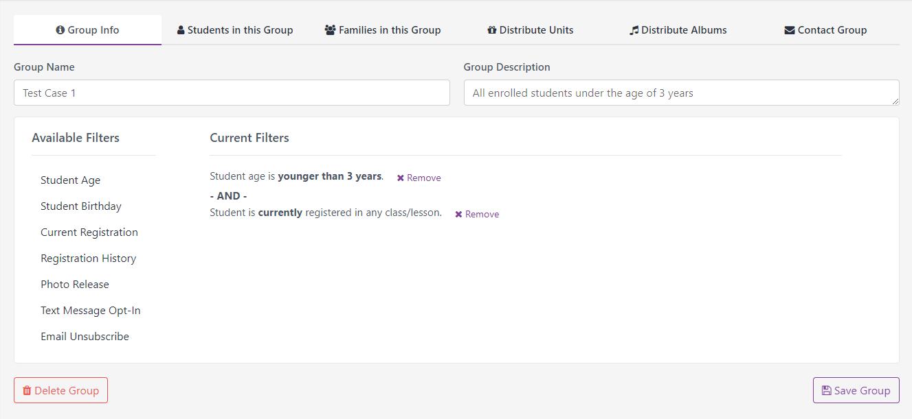

Example 1 - Dynamic Groups
The website I work on is used by thousands of music studio owners to manage their businesses - listing class schedules, accepting payments, managing clients, etc. There was a common frustration with needing to contact certain groups of customers more quickly and effortlessly. It was easy enough to contact a specific class or individual families, but what if you wanted to contact all the students of a teacher who was out sick? Or remind everyone who was enrolled in classes last semester to sign up for the next semester?
My solution was to allow users to create dynamic groups of customers that would automatically update based on a number of different criteria. I met with several users to pitch the idea and gather feedback, created a wireframe of the page, worked with our back-end developer to design the stored procedure, and created the entire front-end.

The page contains a list of available filters for generating a dynamic group, and the display of selected filters.

Clicking on an "available" filter opens a modal with more information.

Each filter is designed to give the user ultimate control over exactly which clients are included in their group.

As filters are added or removed, the display updates in real time to show the current selected parameters.
Once the filters are set, users can view the resulting groups and perform a variety of tasks using tabs at the top of the page.
Example 2 - Account Checklist
After our website had quite a few changes, there was a recurring issue of users not knowing how to set up their accounts to take advantage of the many new features. One part of the solution was to make an Account Checklist. This is another project where I completed all aspects, from concept to design to execution, almost entirely on my own.

Many aspects of setting up an account are optional features, so the top of the page separates this out to show progress toward steps that are required, recommended, and optional. Many of these steps are only available by signing up for a "Pro" version of the site, so they are shown as locked with a link to sign up.

Underneath is each step in the account setup process, with an icon to indicate whether it has been completed or not, or if it is a Pro-only feature. Missing required items are indicated with a red warning icon, while optional items are indicated with a yellow warning icon.

As steps are completed, the corresponding sections automatically collapse, highlighting any remaining items.
Example 3 - More Useful Tables
One of my major responsibilities over the past year has been moving all of the company's internal tools from an ASPX site to an MVC site. This involves discussing the functionality and usability of the existing tool with the appropriate employees, and then recreating it as a new and improved version. One example of this is a page that manages Corporations and the multiple Schools within each Corporation. Previously, these were listed on two separate pages, but they have been combined into one for ultimate ease-of-use.

The list of Corporations includes the most important information at a glance, including the Active status in a color-coded badge.

Clicking on the Schools button opens a sidebar with a list of the Schools for a given Corporation.